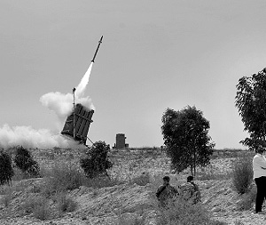

There’s Only One Way to Win a War
The recent missile barrage from the Gaza Strip could have been prevented. At the conclusion of Operation Cast Lead, it was clear that the cessation of military operations would lead to another wave of terror. It was obvious that it would be much more intense and unyielding, and it happened much sooner than anyone could have imagined.
Translated by Michoel Leib Dobry

We’ve heard this long ago. Headlines are already blaring with the message of “We told you so,” and the accusing fingers are being pointed towards all those who supported the uprooting of the Jewish settlements in Gush Katif. But in the final analysis, there’s a totally different issue at hand here. The unfortunate residents of southern Eretz Yisroel today bear the brunt of a most dangerous threat – and it no longer makes a difference who’s responsible. Even the Gerer Chassidim in Ashdod, whose representatives in the Knesset provided a parliamentary safety net for the Gaza disengagement, are today in a very sorry state – and there’s no point in calling them to account. Anyone who treasures the Rebbe’s holy words understands that the issue of giving away territory is a matter of security; it involves endangering the lives of millions of Jews living in Eretz HaKodesh.
When the ultra-Orthodox parties were urged to show their active opposition to the Gaza expulsion, they claimed, “Give us Yavne and its Sages and take Yerushalayim,” i.e., take Gush Katif and save the world of Torah. They placed their own claims against those of the settlers, who charged that it was a matter of expelling Jews or uprooting the sanctuary of Torah. The claims made by those who opposed the expulsion virtually ignored the security aspects.
The Rebbe had a clear reason for constantly quoting Sec. 329 of Shulchan Aruch, which deals with Gentiles who besiege cities in Eretz Yisroel, emphasizing the concept of the sanctity of life as an explanation for the halachic prohibition against giving away territory. When the Rebbe spoke against territorial compromise, he did so out of a sense of genuine concern for the security of the residents of Eretz HaKodesh. Through the vision of Torah, the Rebbe saw that peace could never be achieved by retreat and capitulation, and we must reject such an approach because it endangers the people of Eretz Yisroel. So it was at the Sinai withdrawal, and so it is with every agreement reached with the Arabs.
We can understand the Rebbe’s tremendous feeling of apprehension when we see the results of last week’s violence in the south. People often wondered why the Rebbe made such a great clamor on the issue of shleimus ha’aretz. There were times when he devoted large portions of a farbrengen to this very subject, repeating them over and over again, even when it seemed that everyone was already familiar with the matter. However, when we see hundreds of thousands of people in southern Eretz Yisroel running hysterically into bomb shelters from the fear of rocket fire, and when these murderous missiles even place the residents of Kiryat Malachi within the range of imminent danger, it’s quite easy to understand the genuine concern expressed by the leader of the generation.
THE IDF MUST SET THE RULES
In essence, the recent terrorist barrage from the Gaza Strip could have been prevented, if we had a defense minister driven by more practical considerations and not someone who conducts a faltering election campaign at the expense of the southern residents of Eretz Yisroel. At the conclusion of Operation Cast Lead, it was clear that the cessation of military operations would lead to another wave of terror. It was obvious that it would be much more intense and unyielding, and it happened much sooner than anyone could have imagined. One of the leading military correspondents has already stated that Hamas missiles don’t stay in the weapons depot to get rusty; they’re all set and ready for launch. This is exactly what happened after the elimination of a senior Hamas terrorist. They decided that this provided them with an excuse to fire their rockets and send the Jews a clear message: The terrorists run the show, and they will determine when the tranquility must come to an end.
The current government of Israel is still afraid to conduct a more comprehensive military operation. Its leaders don’t consider the firing of a hundred missiles on one Shabbos a sufficient reason to send the Israel Defense Forces out on a security mission. It’s not exactly clear what they’re waiting for. No one actually expects the terrorists to put aside their weapons and stop what they’ve been doing for the past ten years: raining missiles upon the residents of southern Eretz Yisroel at whatever moment they choose.
This would have been considered totally absurd and unimaginable just a few short years ago. During the struggle against the Gush Katif expulsion, when people warned that the entire southern region would soon turn into another Sderot, this merely sounded like some nightmarish scenario concocted by the right-wingers. The citizens of Eretz Yisroel have already become accustomed to missile attacks on Sderot, and they thought that the terrorists would settle for the bombardment of this remote city. But within six years, everything has changed. Today, all cities in southern Eretz Yisroel are under this threat.
Prime Minister Netanyahu must now ask himself: What would the President of the United States do if one hundred missiles would suddenly land in Chicago on a peaceful Sunday morning? Would Mr. Obama sit quietly and settle for a few empty declarations that the American armed forces know how to defend themselves – or would he issue orders for the total destruction of all the terror cells and missile bases?
Under prevailing circumstances, we simply cannot settle for another low-scale military operation. It’s clear that the terrorists understand only one language. If the prime minister wants to take a serious step towards restoring a normal life for half the country’s citizens, he must ensure their protection and a minimal sense of security. It is simply inconceivable that the IDF has to conduct a limited military operation every few years, which the Israeli policymakers eventually cut short due to international pressure or political considerations. As a result, this leaves millions of Jews living in Eretz Yisroel at the mercy of the terrorists – until they decide on an appropriate time to unleash yet another dangerous onslaught of missiles and bring the lives of local residents to a standstill.
RETAKE GAZA NOW!
The situation in southern Eretz Yisroel is nothing less than a war. You can give it a variety of names of a less absolute nature – escalation, deterioration, cycle of violence, wave of terror. However, no matter what you call it, when such belligerence goes on unrestrained for so many years, this is a state of war in every respect.
The main point that emerges here is that there is only one way to win a war. This is accomplished when the stronger side vanquishes the weaker side, threatening it with even greater punishment if it dares to use violence again. To this day, the government of Israel has yet to take such action with the terrorists. Therefore, every time the terrorists proudly lift their heads after a heroic armed battle, the end result is always another meaningless ceasefire.
To pursue this point further, a war ends when the stronger side conquers territory and raises its flag. This is the way that all major battles throughout the annals of world history have been brought to a close. No military confrontation has ever concluded without one side declaring a clear victory. If the IDF truly wishes to defeat the terrorist cells in Gaza and put an end to the missile threat hanging over the residents of southern Israel, they must reoccupy the Gaza Strip. There is no alternative. While such talk is not very popular these days, we must speak openly about the possibility of retaking the land we evacuated six and a half years ago.
We simply cannot tolerate Hamas turning this once peaceful and thriving territory into a nest of terror bases and weapon depositories for thousands of rockets endangering the security of Eretz Yisroel. Yet, the IDF has no plans or the desire to conquer the Gaza Strip.
One of the deceptive falsehoods spread by those who sold the Gush Katif expulsion to the Israeli public was that the government was “disengaging” from Gaza. For a period of two years, they convinced the citizens of Eretz Yisroel that we were leaving Gaza; we were cutting ourselves off from Gaza; we were putting Gaza behind us. Many Israelis naively believed that we had to carry out the withdrawal to make Gaza a faraway place, totally detached from the rest of the country. As a result, terrorism would soon be forgotten, once and for all.
In fact, this was nothing less than a shabby lie. The government of Israel had already departed from Gaza with the signing of the Oslo Accords, and during the period prior to the expulsion, there was not a single Israeli soldier anywhere in the Gaza Strip. This was the reality that brought terrorist attacks and missile bombardments upon the settlers of Gush Katif. The pro-disengagement campaign used these very acts of terrorism to convince the Israeli public of the importance of leaving Gush Katif without delay…
The answer to all this subservient talk must come through sensible demands made by those who understand that one cannot run away from terror. The world has to face the reality of the destination to which the method of surrender and submission has led us. It must realize why all the talk about economic tranquility on the eve of the Gush Katif expulsion has gone up in the flames of rocket fire directed at the settlements we once occupied. Now, the people must demand that the prime minister have the courage to proclaim that there is no other way to deal with terrorism except through war – the only language that terrorists understand.
If the public demands a wide-scale operation in the Gaza Strip and a return to Gush Katif and the Gaza region, they can pressure the prime minister to take those measures that he knows better than anyone else must be taken. As an initial step, there is no more appropriate time to reoccupy the Gaza Strip than right now, when hundreds of thousands of southern residents are running to their shelters in fear. Afterwards, we must hope that the second stage will lead to a restoration of the Jewish settlements in Gush Katif and Jewish sovereignty throughout the Gaza region.
But the demand to protect the residents of southern Eretz Yisroel should not be limited to the nationalist camp. This is not a matter of left or right; rather this is an issue with a wide consensus within the heart of Israeli public opinion. Is there anyone who thinks that the people living in the south don’t deserve security? Is there reason to believe that after so many years of exhausting struggle with the Arabs in Gaza, we can avoid a full-scale war that will establish a new set of rules and crush their terrorist organizations? All defense experts agree that the demand for military action should not be an exclusively right-wing initiative. This time, we’re talking about a struggle for residents living within the Green Line in the cities, kibbutzim, and development towns of the south. We can realistically expect them to call for a general strike throughout the region, travel en masse to Yerushalayim, and demonstrate before the Knesset to demand personal security. We can only hope that when such statements are heard from the southern population, they will reach receptive ears within the government of Israel, and its leaders will finally realize what must be done to establish peace and security for these people.
Sholom Ber Crombie. "There’s Only One Way to Win a War." Beis Moshiach, no. 828 (March 22, 2012).